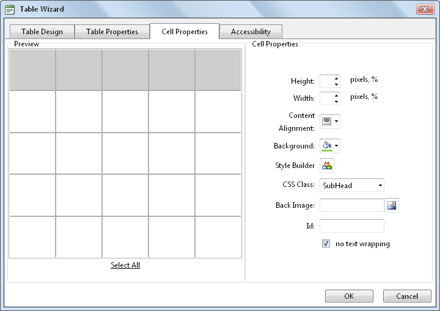
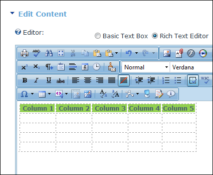

Setting Cell Properties
How to set the optional cell properties of a new or existing table using the Table Wizard of the TelerikEditorProvider for the RTE.
- Right-click inside a cell of an existing table and select
 Cell Properties from the drop down list. This opens the Cell Properties tab of the Table Wizard.
Cell Properties from the drop down list. This opens the Cell Properties tab of the Table Wizard.
- At Preview, select which cells you want to set the properties of:
- To select a single cell, click on that cell. The selected cell is highlighted.
- To select multiple cells, hold down the Ctrl key and click on each required cell - OR - Click the Select All link and then hold down the Ctrl key and click on one or more cells to deselect them. The selected cells are highlighted.
- At Cell Properties, set any of the following:
- In the Height text box, set the cell height in either pixels or as a percentage by either typing a value into the text box or by using the Increase
 and Decrease
and Decrease  buttons. The value will automatically be saved in pixels unless you enter the percentage symbol (%) into the text box. E.g. Enter 100px or 100 to set the height as 100 pixels, or enter 100% to set the height as 100%. Leave blank for no specified height.
buttons. The value will automatically be saved in pixels unless you enter the percentage symbol (%) into the text box. E.g. Enter 100px or 100 to set the height as 100 pixels, or enter 100% to set the height as 100%. Leave blank for no specified height. - In the Width text box, set the cell width in either pixels or as a percentage as for height. Leave blank for no specified width.
- At Content Alignment, click the arrow of the Alignment Selector button and select the alignment of content.
- At Background, click the Color Picker
 button and select the background color.
button and select the background color. - At Style Builder, click the Style Builder
 button and build one or more styles. See "Using the Style Builder"
button and build one or more styles. See "Using the Style Builder" - At CSS Class, select a class for this/these cells.
- At Back Image, click the Image Manager
 button and select a background image for the table.
button and select a background image for the table. - In the Id text box, enter an Id reference for this/these cells.
- At No Text Wrapping, to disallow text within this/these cells from wrapping to another line - OR - to allow text to wrap.

- Click the OK button to save or go to another tab of the Table Wizard to set more properties.

Setting Cell Properties